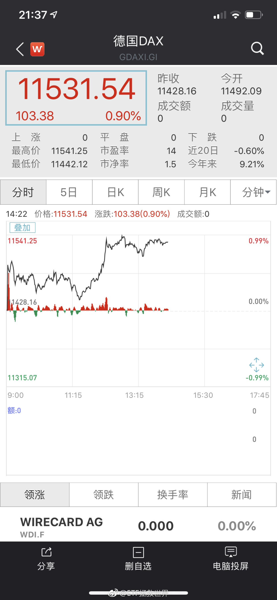
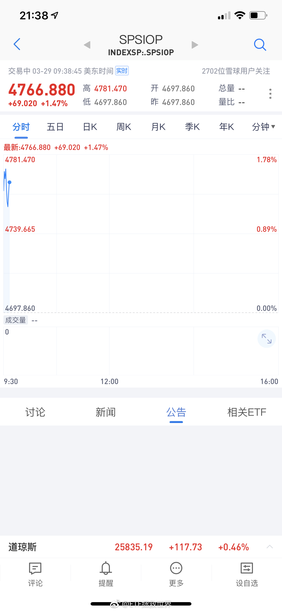
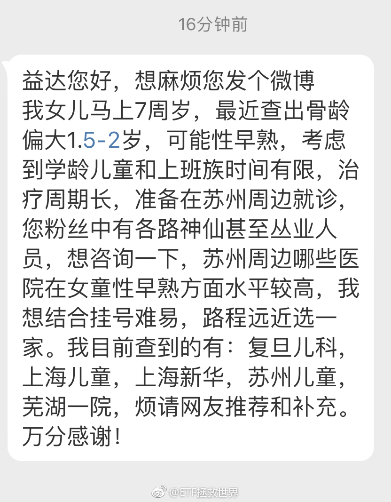

回复@小五雀雀:S是家里有矿无限投入型。任何大跌都没在怕的。150是资产配置型，讲究稳中求进，不断新高。//@小五雀雀:S是激进型//@ETF拯救世界:回复@Naywssl:没在150里面。记住，S里面的，跌的越狠越好。150已经没有什么力量去大幅补仓了。S不同。S的任何品种都应该希望暴跌。@ETF拯救世界:谢谢老铁，666 
回复@Naywssl:没在150里面。记住，S里面的，跌的越狠越好。150已经没有什么力量去大幅补仓了。S不同。S的任何品种都应该希望暴跌。//@Naywssl:黄金跌了@ETF拯救世界:谢谢老铁，666
回复@godreameng:这个思路没错。把经常消费的经常使用的公司做个组合，要比那些你根本不知道干嘛的热门股靠谱的多。当然，如果在钻石坑里买胜算就更大，还要看价值//@godreameng:我应该多配置点消费和医药，医疗股票。毕竟每年都要消费很多，花不少钱在医院。@ETF拯救世界:装修的时候做了一套全屋定制，因为比较贵，怎么想都觉得要把钱赚回来。然后就买了那家公司的股票。后来跌了10%，也没在意。今天一看，已经涨了40%了……赚了两套全屋定制的钱……
回复@鸟语花香1227:初中谈恋爱是性早熟？我一直觉得很正常啊…//@鸟语花香1227:回复@小小6_6:大体就是孩子过早接触一些时尚，成人化的东西，易导致性早熟，所以现在小学初中不少谈恋爱的。性早熟并不都是吃出来的，心理早熟与现在的网络手机普及有很大关系。@ETF拯救世界:有了解的说说 
回复@薏仁之梦:德国买了就不要看了，十年后再说。//@薏仁之梦:请问E大，德国dax多少点进入高估呢？@ETF拯救世界:为什么我只敢买交易所的标准化产品，而且是不死的那种。很简单。其它品种投少了，改变不了什么，没有意义。投多了，风险太大。辛辛苦苦攒了十几年的钱瞬间就没了，这个我接受不了。还是指数基金适合我。除非所有持有的1000家公司同时崩盘，除非交易所关门，否则就死不了。死不了就有办法挣钱。
为什么我只敢买交易所的标准化产品，而且是不死的那种。很简单。其它品种投少了，改变不了什么，没有意义。投多了，风险太大。辛辛苦苦攒了十几年的钱瞬间就没了，这个我接受不了。还是指数基金适合我。除非所有持有的1000家公司同时崩盘，除非交易所关门，否则就死不了。死不了就有办法挣钱。